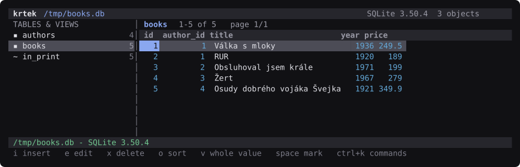
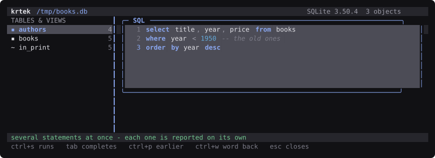
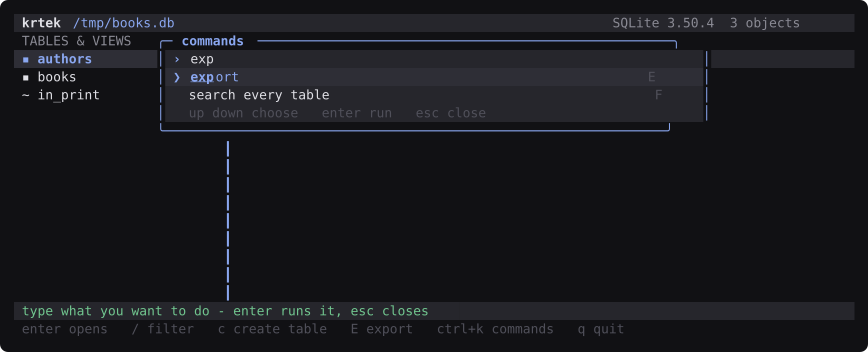
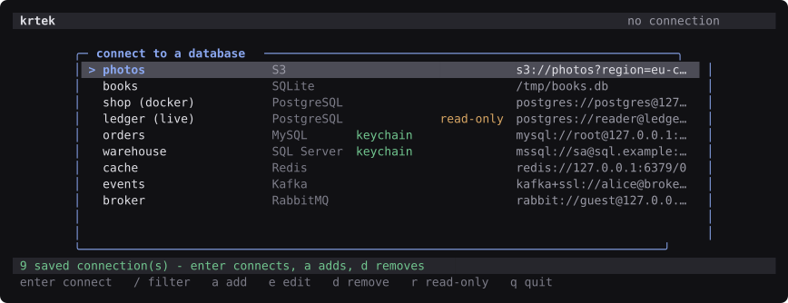
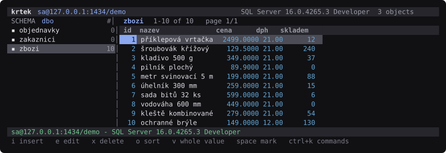
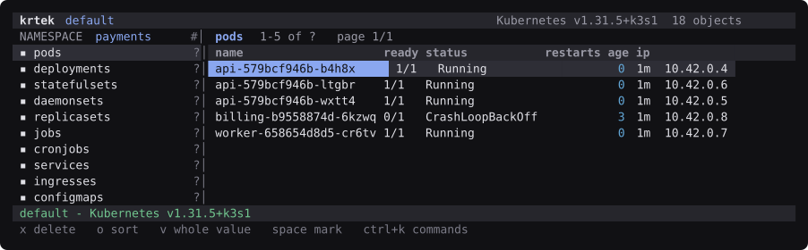
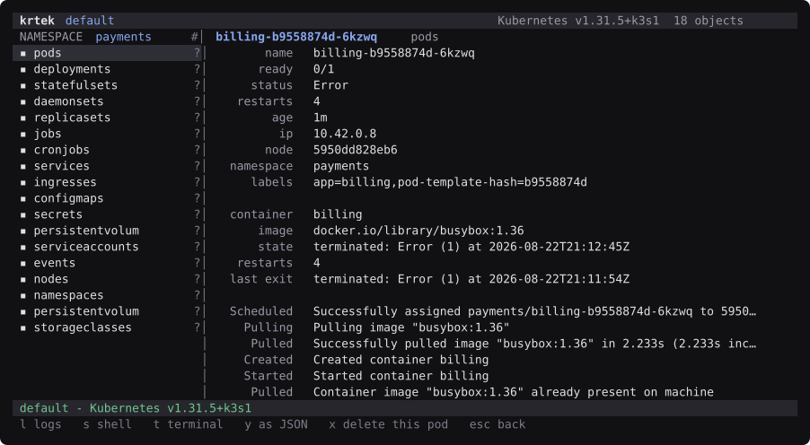

A database manager for the terminal. Browse, edit, alter, dump, import - every one of them a key press.

This page is also the APT repository, so Debian and Ubuntu can install and upgrade krtek the ordinary way:
sudo install -d /etc/apt/keyrings
sudo curl -fsSLo /etc/apt/keyrings/krtek.gpg \
https://zales.github.io/krtek/krtek-archive-keyring.gpg
echo "deb [signed-by=/etc/apt/keyrings/krtek.gpg] https://zales.github.io/krtek ./" \
| sudo tee /etc/apt/sources.list.d/krtek.list
sudo apt update
sudo apt install krtekThe metadata is signed, so apt checks it the way it checks Debian's
own repositories - no trusted=yes anywhere. The key above is the one
that signs it, and the build verifies its own signature before publishing, because a
repository whose signature does not check out breaks apt update for
everyone who already trusts it.
brew install zales/krtek/krtekmacOS and Linux, Apple silicon and Intel, arm64 and x86_64.
tar xzf krtek-*.tar.gz && ./krtek-*/krtekThe archive needs nothing installed. SQLite, libpq, the MariaDB
connector, libssh2 and OpenSSL are linked into the binary, and Redis, Kafka, S3,
Azure Blob, RabbitMQ, the Kubernetes API and SQL Server's TDS are spoken
directly - down to the WebSocket a shell in a container needs, so no
kubectl either.
The Linux builds are static against musl and run on any distribution; the macOS
builds leave only Apple's own libraries dynamic. Homebrew gets a dynamic build
with those libraries declared as dependencies instead - half the download, and
their security fixes arrive with brew upgrade.

tab completing table and column
names, ctrl+s running it - and ctrl+c giving up on a
statement that takes too long, on every engine.
ctrl+k finds any command by a few letters of its name
and shows the key that runs it, so using it teaches the key map.

money and
decimal stay digits instead of becoming floats, and text stays
text whatever the database's own codepage happens to hold.
kubectl prints, including the ones that have to be
worked out - an age, a ready count, and the status that says
CrashLoopBackOff where the phase would have said
Running.
enter opens the object: what each container is doing,
what the last one died of and with what exit code, and the events - which is
where a failed image pull is written down and nowhere else. Along the bottom is
what can be done to it, logs and a shell included..tar.gz, .deb and the Homebrew formula, for macOS and
Linux on both architectures.man krtek once it is installed, and ? inside the app
for the whole key map.